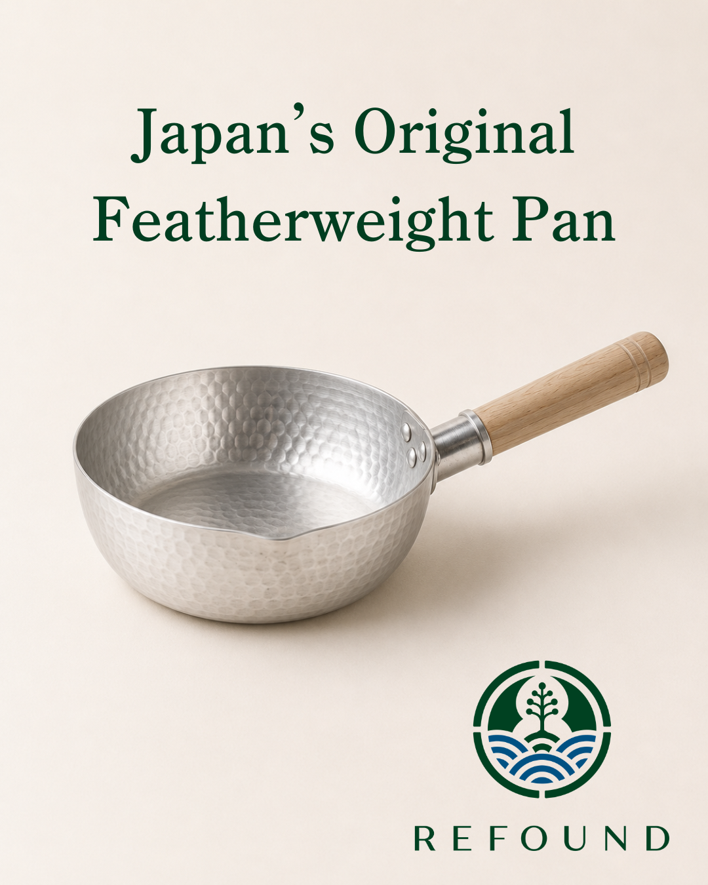
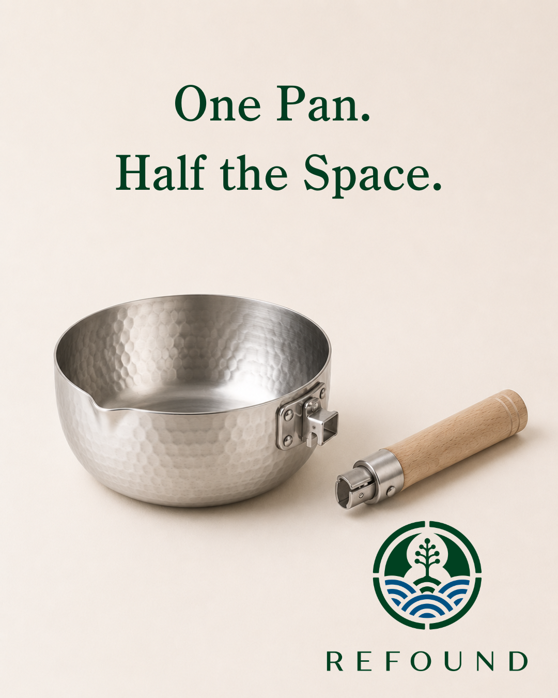

REFOUND brings traditional Japanese craft to the way you live today. Our first product is a yukihira pan — a shape that's lived in Japanese kitchens for generations — and we're developing it in two versions. Take a look at both, and tell us which one belongs in your kitchen.

The yukihira pan has been a staple of Japanese kitchens for generations —
thin, light metal that heats fast and stays remarkably light in your hand.
Making dashi, simmering miso soup, slow-cooking a nimono — these staples
of Japanese home cooking have relied on the yukihira pan for generations.
Simmered dishes in particular taste noticeably better made in one.
This version uses anodized aluminum, a refined evolution of the
traditional yukihira. The anodized surface resists corrosion, solving
aluminum's biggest drawback — its notoriously high-maintenance
surface. Shouldn't something you use every day be built to last,
without the hassle? We're also planning an interior measurement
scale and a double-sided spout for pouring from either side. All
the lightness, all the heritage of traditional aluminum — with
none of the upkeep.
Made by a long-established yukihira specialist workshop in Osaka.
From the hammered texture to the handle assembly, every step
happens in-house — genuinely made in Japan. Planned at 22cm, larger
than Japan's standard 18cm, to suit kitchens overseas.

Japan's classic yukihira pan, reimagined for the modern kitchen. This
stainless version is being developed with a workshop in
Tsubame-Sanjo. The same fast, even heat — now compatible with
induction as well as gas.
The detachable handle has real history behind it. In Japanese
ryotei kitchens, where many dishes are finished at once, a fixed
handle gets in the way — so chefs have long used handle-less
yukihira pans with a tool called a yattoko, a dedicated
pan-gripper. This version swaps the yattoko for a handle that
simply clips on and off — the same professional logic, made
effortless for everyday use.
Switching to stainless steel means it works on any heat source.
It's a little heavier than the aluminum version, but stainless
tends to suit kitchens overseas better. Same iconic yukihira
shape as the original — redesigned for how modern kitchens
actually work.